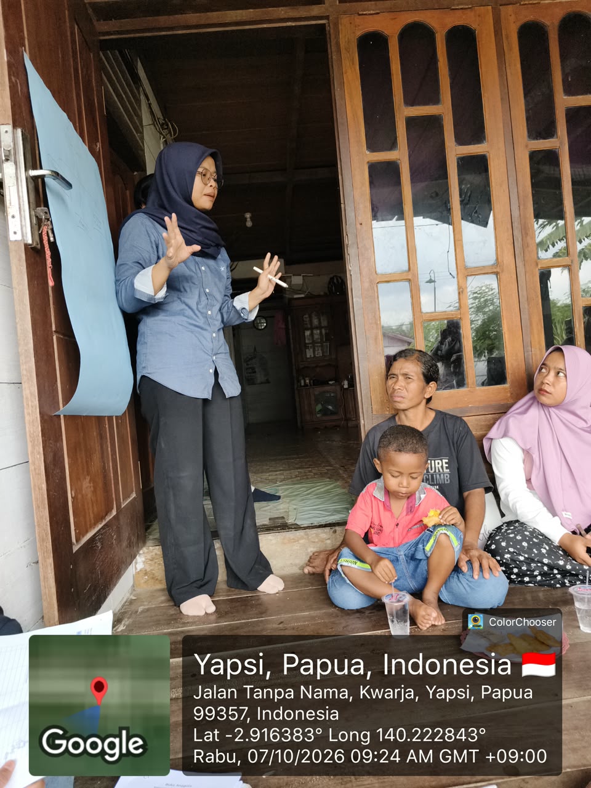
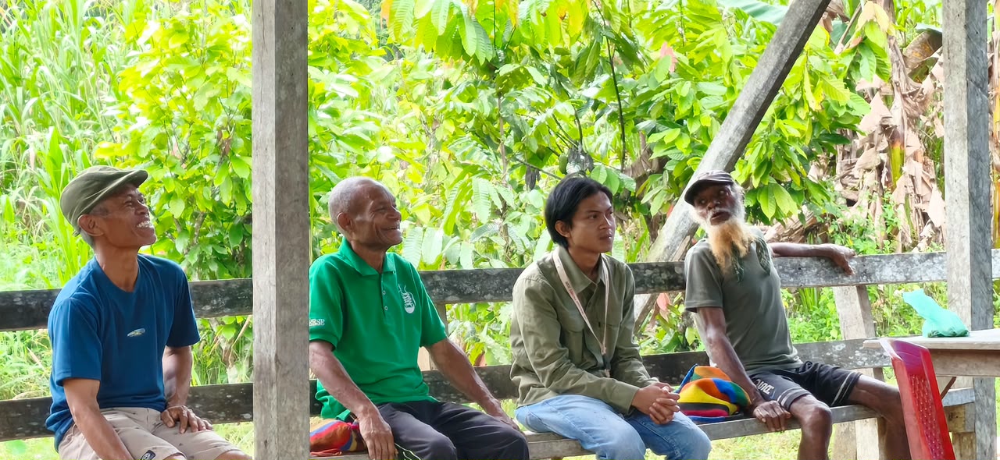
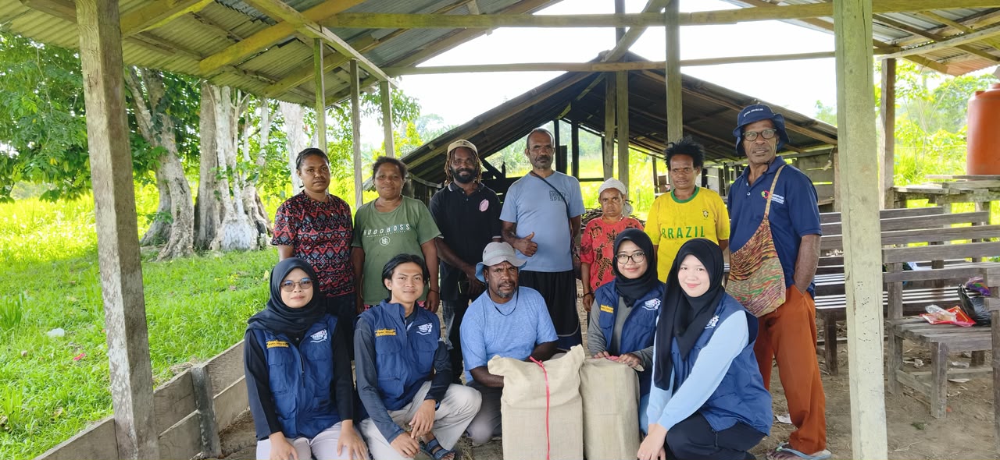
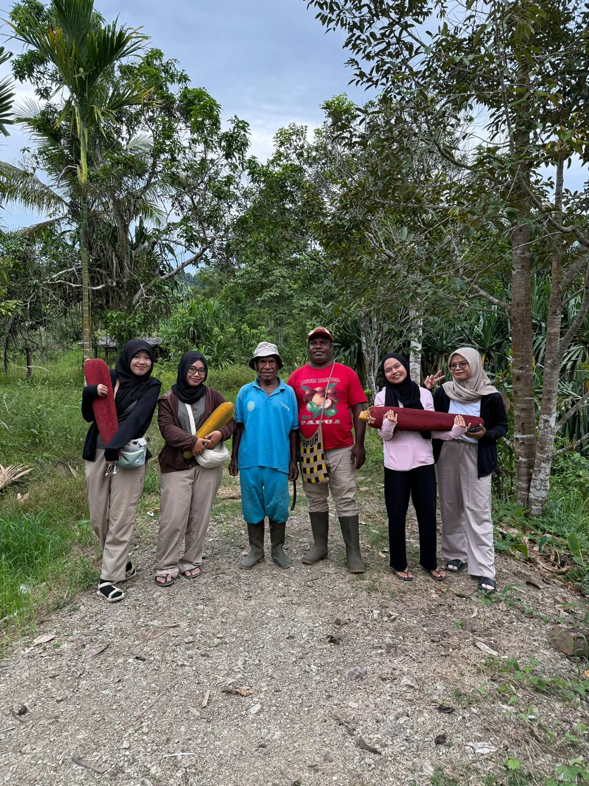

Agropolitan
Mewujudkan Kawasan Agropolitan Kakao Lereh yang berdaya saing dan berkelanjutan
Klaster kakao memperkenalkan peluang usaha, mengadakan workshop produk, serta menyediakan ruang belajar budidaya bagi petani muda. Dukungan digitalisasi memperkenalkan akses informasi dan promosi produk.
Pengembangan Kawasan Transmigrasi Lereh diarahkan untuk mewujudkan agropolitan kakao terintegrasi dari hulu hingga hilir, dengan fokus peningkatan produksi biji kakao melalui perluasan lahan potensial, pembangunan demplot percontohan, dan sekolah lapang bagi petani pemula. Peta distrik dan analisis kesesuaian lahan menjadi dasar pengembangan areal budidaya kakao pada lahan berkategori sangat sesuai guna memenuhi kebutuhan pasar yang lebih luas. Hilirisasi didorong melalui workshop pembuatan cokelat sederhana langsung dari biji kakao hasil kebun serta pengembangan kemitraan pasar baru. Luaran lainnya meliputi buku “Mulai Dari Kebun, Menggali Peluang Cokelat – Panduan Praktis Berkebun Kakao di Tanah Papua”, Dokumen Rencana Pengembangan Kawasan Agropolitan Lereh Berbasis Komoditas Unggulan Kakao Tahun 2027–2029, dan Website Kawasan Transmigrasi Lereh. Keberlanjutan program diperkuat melalui Pokja Agropolitan yang dipimpin Dinas Transmigrasi sebagai koordinator pengembangan kawasan.




Manajemen usaha
Pelatihan tata kelola kelompok
Pelatihan mencakup pembagian peran, manajemen usaha, serta pencatatan dan perencanaan keuangan. Pendampingan ditujukan untuk membantu penerapan dalam kegiatan kelompok sehari-hari.
Program pendampingan manajemen usaha dan tata kelola kelembagaan di wilayah transmigrasi telah dilaksanakan melalui serangkaian kegiatan penguatan kapasitas kelompok tani. Pendampingan diberikan kepada lima kelompok tani, dengan fokus pada peningkatan kemampuan manajemen keuangan dan pengarsipan dokumen. Selain itu, dilaksanakan pelatihan manajemen keuangan, tata kelola kelembagaan, serta pemasaran dan pengemasan produk. Program ini juga memberikan dukungan barang modal untuk menunjang kegiatan produktif kelompok. Melalui rangkaian kegiatan tersebut, diharapkan kelompok tani mampu meningkatkan profesionalisme pengelolaan usaha, memperkuat kelembagaan, meningkatkan daya saing produk, serta mewujudkan kemandirian ekonomi masyarakat secara berkelanjutan.
Good Agricultural Practices
Memperbaiki nilai hulu kakao
Kami mendampingi dan melatih petani kakao pada empat fondasi budidaya yang berkelanjutan: peningkatan sumber daya manusia, penerapan agroforestri, penggunaan klon unggul yang adaptif terhadap perubahan iklim, dan regenerasi petani muda. Tiga sesi pelatihan membahas pascapanen, budidaya yang baik, dan pengendalian hama, dilengkapi lima modul serta brosur praktik pembuatan pupuk dan pestisida nabati. Pelatihan dilakukan bersama pemangku kepentingan dan local champion yang menjadi mitra penting penggerak budidaya kakao di kawasan. Di SP 3, kebun percontohan dibangun dengan pola Diversification Cocoa Agroforestry (DCA) agar petani transmigran maupun masyarakat Lereh dapat belajar langsung dan menerapkannya secara bertahap.
Teknologi tepat guna
Teknologi Tepat Guna Pascapanen Berbasis Standar SNI untuk Penguatan Mutu Biji Kakao
Tim Teknologi Tepat Guna mengembangkan KakaBrik dan cabinet solar dryer untuk meningkatkan efisiensi serta mutu pascapanen kakao Lereh. Petani didampingi melalui pelatihan pemecahan buah, fermentasi, pengeringan, sortasi, dan pengendalian mutu. SOP pascapanen disusun mengacu pada SNI 2323:2008/Amd.1:2010 sebagai pedoman menghasilkan biji kakao berkualitas. Program ini juga mengembangkan kurikulum muatan lokal untuk memperkenalkan budidaya, teknologi, dan pengolahan kakao kepada generasi muda. Penguatan kelompok tani dilakukan melalui pengelolaan pascapanen bersama agar proses produksi lebih konsisten. Pengendalian mutu mencakup kadar air, tingkat fermentasi, kebersihan, dan kondisi fisik biji, sehingga mendukung kemandirian petani dan peningkatan daya saing kakao kawasan berkelanjutan dari kebun hingga pasar.
Hilirisasi
Membangun fondasi pengolahan
Kunjungan dan diskusi dilakukan untuk mempelajari rantai produksi serta kebutuhan pengetahuan, peralatan, investasi, dan tenaga. Rumah pengolahan cokelat ditempatkan sebagai arah pengembangan, bukan fasilitas yang sudah dipastikan beroperasi.
Digital Marketing & Regenerasi Petani
Menghubungkan Kakao Lereh dengan Generasi Baru
Kami memperkuat ekosistem kakao Lereh melalui pelatihan digital marketing, produksi konten, personal branding, dan komunikasi bisnis bagi petani, generasi muda, kelompok tani (Poktan), serta gabungan kelompok tani (Gapoktan). Pendampingan dilakukan melalui praktik langsung untuk mengangkat cerita petani, potensi kebun, dan kualitas kakao Lereh ke ruang digital. Bersama sekolah dan komunitas lokal, program ini juga menumbuhkan ketertarikan generasi muda terhadap kakao sekaligus menyiapkan kader pemasaran yang mampu memperluas jejaring, membangun kepercayaan, dan menggerakkan keberlanjutan kakao dari kampung.